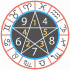

Gemini is the third astrological sign in the zodiac, originating from the constellation of Gemini.
It is a positive mutable sign.
Aries is the first astrological sign in the zodiac, spanning the first 30 degrees of celestial longitude,
and originates from the constellation of the same name.
Taurus, is the second astrological sign in the present zodiac.
It spans from 30° to 60° of the zodiac.
Leo is the fifth astrological sign of the zodiac.
It corresponds to the constellation Leo and comes after Cancer and before Virgo.
Scorpio is the eighth astrological sign in the Zodiac, originating from the constellation of Scorpius.
It spans 210°–240° ecliptic longitude.
Cancer is the fourth astrological sign in the Zodiac,
originating from the constellation of Cancer.
Virgo is the sixth astrological sign in the Zodiac.
It spans the 150–180th degree of the zodiac.
Libra is the seventh astrological sign in the Zodiac.
It spans 180°–210° celestial longitude.
Aquarius is the eleventh astrological sign in the Zodiac,
originating from the constellation Aquarius.
Sagittarius is the ninth astrological sign, which is associated with the constellation
Sagittarius and spans 240–270th degrees of the zodiac.
Capricorn is the tenth astrological sign in the zodiac out of twelve total zodiac signs,
originating from the constellation of Capricornus, the horned goat.
Pisces is the twelfth astrological sign in the Zodiac.
It is a negative mutable sign.

AstrologyFreakⒸ.